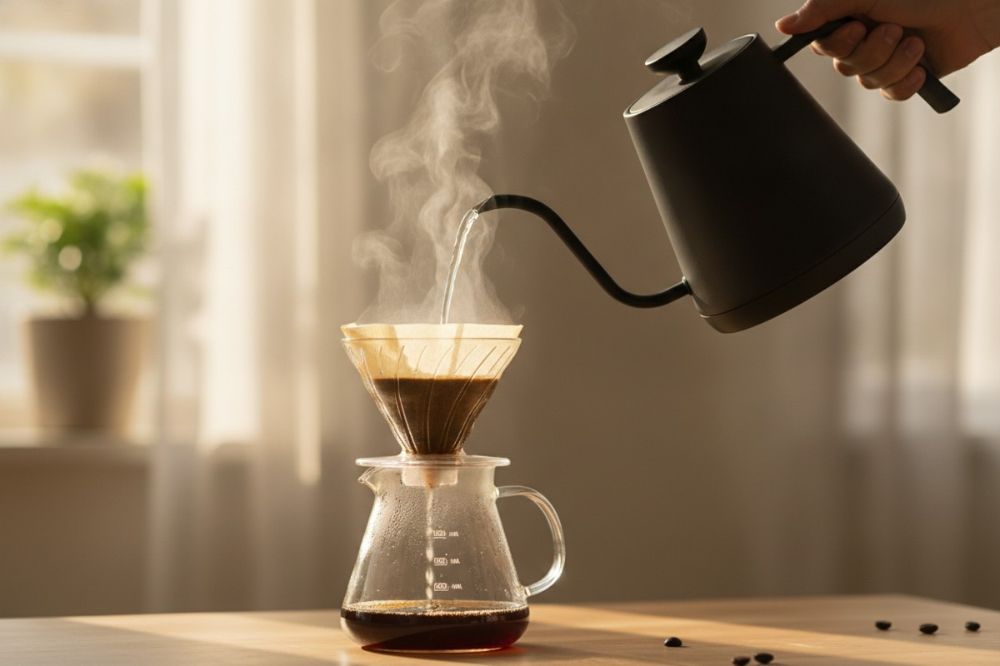

#ad Links on this page are affiliate links: we earn a commission if you buy, at no extra cost to you. As an Amazon Associate I earn from qualifying purchases. More
Gift guide
Kitchen gifts
Kitchen gear is the best-paying category we carry and the easiest to get wrong as a gift. Each one is decided by a spec most listings don't put in the title - here is what to check first.
We have not tested these products. This page is a buying filter, not a
review: it tells you which specs decide whether the gear works, so you can judge any listing -
including ones we don't link.

AI-generated photo · generic example, not a specific product
01
Electric gooseneck kettle
Hold temperature, not just boil
What to check
A stated hold-temperature feature, not just a kill switch at boiling - that's the difference for pour-over coffee and tea.
Gooseneck spout for a controlled pour; a wide spout is the #1 return reason.
Stainless or glass interior - avoid unlined non-stick coatings that chip with boiling water.
Skip it if They already own a stovetop kettle they like - this is an upgrade, not a fix.
AI-generated photo · generic example, not a specific product
05
Cast iron skillet
Pre-seasoned, then weight
What to check
Pre-seasoned from the factory, so it's usable on arrival rather than needing a multi-session seasoning process.
Weight relative to who's lifting it - a 12″ skillet can run 8+ lbs.
A helper handle on larger sizes for a second hand when it's full and hot.
Skip it if They've said cast iron maintenance isn't for them - a carbon steel pan is the lighter-maintenance alternative, not a reason to skip the gift.